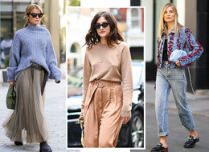
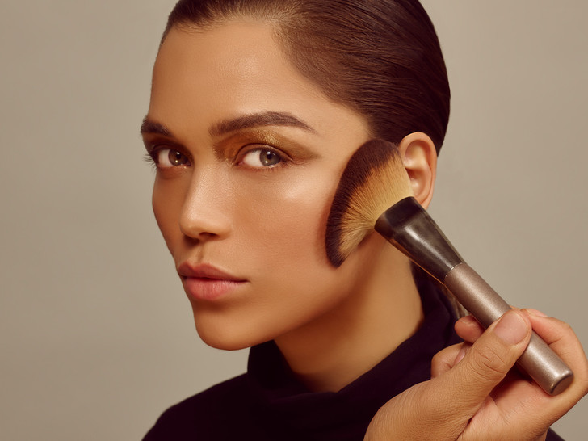

5 грубых ошибок в макияже,
которые никогда не допустит визажист
[Красота]
[Макияж]
В стоп-листе гуру мейкапа можно найти много приемов, которые обычные девушки часто считают «рабочими» или даже необходимыми для создания качественного макияжа. Какие из них должны войти и в ваш «черный список» — рассказываем в деталях.
8 394 просмотров --- 23 ноября 2021Сегодня макияж — это полет творческой фантазии и возможность примерить на себя любой образ. Сдержанность и яркость, минимализм и броскость равно актуальны в кресле визажиста — как в повседневной жизни, так и в случае особенных мероприятий.
Но, несмотря на возможность полного экспромта и, казалось бы, невозможности испортить макияж при сегодняшнем трендовом многообразии, существует ряд ошибок, которые могут навредить даже идеальному макияжу. Вместе с топ-визажистом и бьюти-экспертом Мальвиной Магомедовой рассказываем о главных из них.
- 50 привычек, которые незаметно изменят вашу жизнь к лучшему
- Нелепо и немодно: 7 устаревших зимних вещей, которые носят только россиянки
-  Уже не актуально: 7 «модных» вещей, которые не стоит покупать в новом сезоне
Макияж под шаблон
Распространенная ошибка — попытка сделать шаблонный макияж без учета индивидуального строения лица и других особенностей внешности. Грамотный визажист всегда старается в первую очередь отметить эти и другие тонкости и в зависимости от них подобрать отдельную схему макияжа.
Акцент на макияже
Сами визажисты часто называют это макияжем «макияж»: когда первое, что бросается в глаза при взгляде на человека, — это его мейкап. В таком случае его акцент настолько выражен, что все остальное уходит на второй план. Помните: макияж призван лишь подчеркнуть достоинства внешности, а не «нарисовать» их.
Недостаточное внимание подбору тона
и текстуры средств
Ключевое и главное условие красивого макияжа — правильно подобранный тон. Подбор производится индивидуально с опорой на естественный цвет вашей кожи. Чем точнее будет выбор, тем натуральнее будет выглядеть макияж. Неправильный тон придает лицу неестественный вид, портит общую концепцию макияжа, а также резонирует с кожей шеи и тела.
Грубой, с точки зрения визажистов, ошибкой также является неверно подобранная текстура тонального средства. Текстур бывает много: кремовые, в виде суфле, жидкие, твердые стики. Крайне важно помнить, что и ложатся они на разные типы кожи тоже по-разному. Ошибка может стать причиной неестественного, утяжеленного бьюти-образа (читайте также: «Тональный крем: 8 ошибок, которые вы делаете ежедневно»).